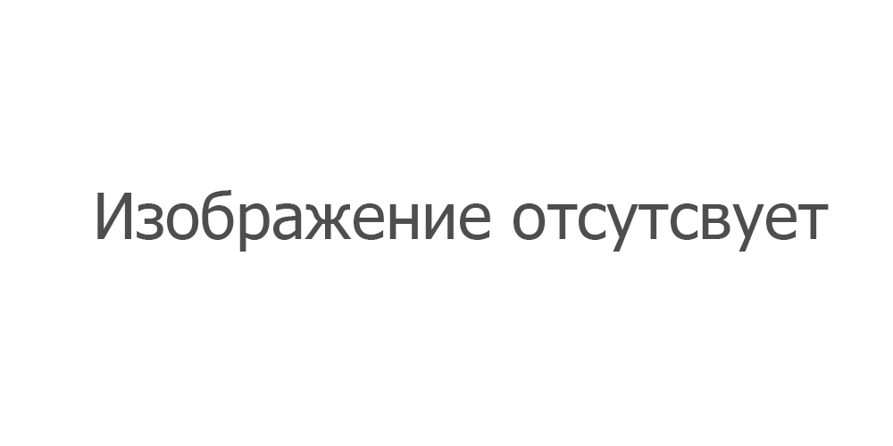

Запуск редакора
Чтобы отерыть редактор Real story Creator, нажмите соответсвующую кнопку в меню:

Навигация в пространстве
Когда редактор будет открыт, вас сначала встретит 3D-сцена.
Примечание
Для перемещения камеры зажмите правую кнопку мыши.
| Кнопка | Дейсвие |
|---|---|
| WASD | Движение |
| Q | Двигаться вверх |
| E | Двигаться вниз |
| Shift + WASD | Двигаться быстрее |
| Ctrl + WASD | Двигаться медленнее |
| Колесо мыши вверх / вниз | Двигаться вперёд / назад |